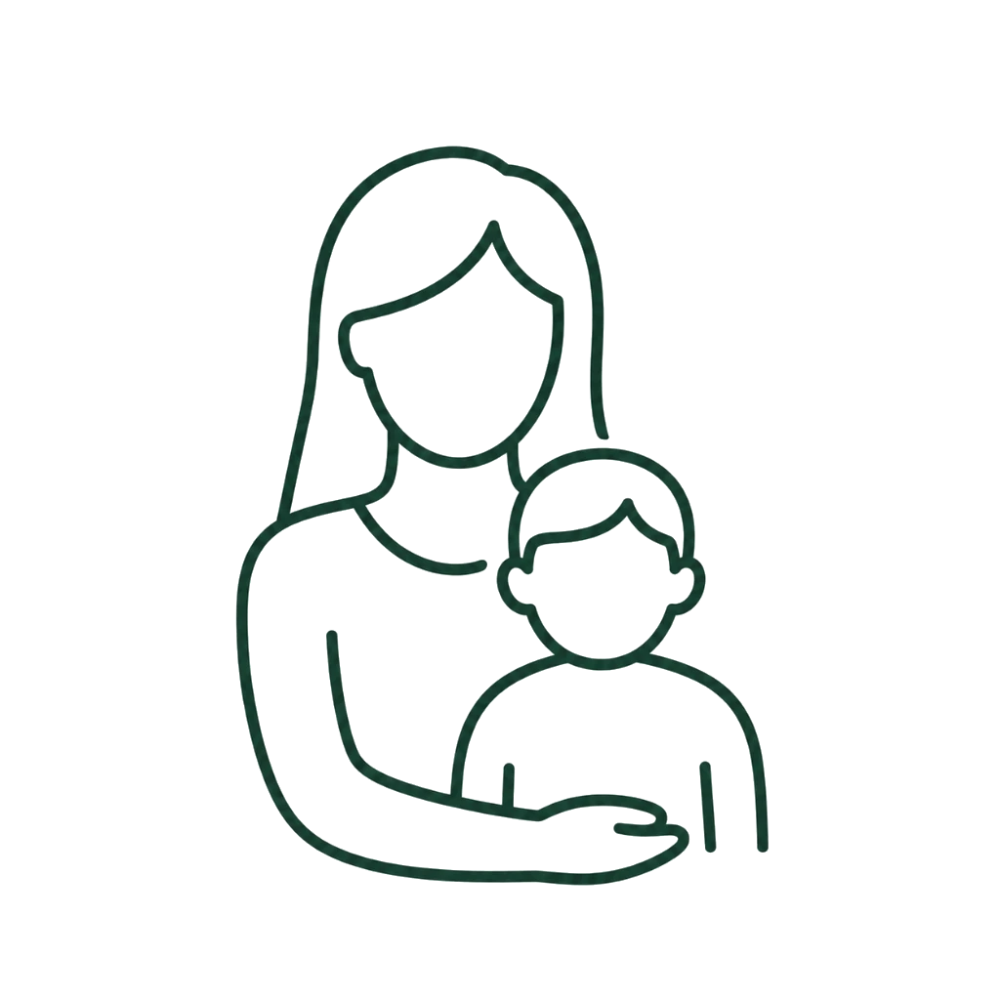

Women & Children Clinic
여성 및 소아
여성의 생애주기별 건강과 소아의 건강한 성장을 돕는 1:1 맞춤형 케어
부드럽고 세심한 치료로 몸의 자생력을 높입니다.
여성의 몸은 생애 전반에 걸쳐 지속적인 호르몬과 기혈의 변화를 겪으며,
소아의 신체는 면역계와 골격계가 활발히 확립되는 섬세한 과정을 지나고 있습니다.
부부한의원은 통증 중심의 인위적인 개입을 배제하고,
생애주기별 흐름에 맞는 1:1 맞춤 치료를 통하여
여성의 자궁 균형을 회복하고 호르몬 변화에 대한 적응력을 높이며,
아이들의 비강 호흡 정화, 바른 비례 성장을 돕습니다.
주요 진료 대상 및 상황
여성 클리닉
생리통, 생리불순 및 자궁 질환
하복부 기혈 정체와 어혈로 인한 생리통, 주기가 일정하지 않은 생리불순 및 다낭성 난소 증후군 등을 관리하고 자궁 기능을 보강합니다.
갱년기 증후군 및 안면홍조
여성호르몬 저하에 따른 열감, 발한, 야간 수면 장애, 무력감, 두근거림 등 갱년기에 겪는 자율신경계 과민 증상을 편안하게 완충합니다.
소아 클리닉
성장 지연 및 소아 식욕 부진
소화기 기능이 약해 음식 섭취가 부진하고 또래에 비해 성장이 더딘 아동의 소화 기능 개선과 골격 및 성장판 주변부 발달을 보강합니다.
소아 만성 비염 및 호흡기 질환
온도 변화에 민감하고 호흡기 장벽이 연약해 쉽게 발생하는 코막힘, 비염, 재채기, 잦은 감기 등을 다스려 편안한 호흡을 돕습니다.
여성·소아 맞춤 치료 솔루션
침 치료
여성 자궁 주변의 기혈 정체와 어혈을 소통시키고, 소아의 자율신경 조절 및 성장판 주변부 경혈을 자극하는 안전하고 섬세한 침 치료를 시행합니다.
맞춤형 약침 치료
통증과 순환에 도움이 되는 녹용 약침에 피로 누적으로 인한 회복력, 기능 저하에 도움이 되는 자하거(태반) 약침까지 적절하게 활용하여 효과적인 치료를 도모합니다.
한약 처방 (맞춤한약 혹은 첩약건강보험 2차 시범사업)
자궁 환경 개선과 호르몬 균형을 돕는 여성 한약 및 소아의 비강 점막 장벽 강화와 골격 및 뼈 발달을 돕는 안전한 성장 한약을 맞춤형으로 조제 처방합니다.
여성·소아 클리닉 진행 프로세스
안내 데스크 예약 확인, 접수 및 문진표 작성
원장님 진료를 통해 체질 판단, 자궁 기능 평가 및 성장 지표 분석
침, 맞춤형 약침 치료 등 개인별 상태에 맞는 세밀한 한방 치료 시행
수납 및 약재 안내 후 가정 내 생활 수칙 교육과 정기 추적 관찰